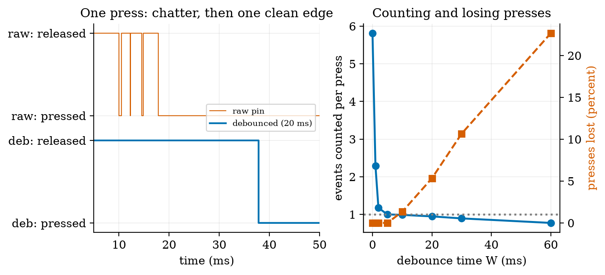
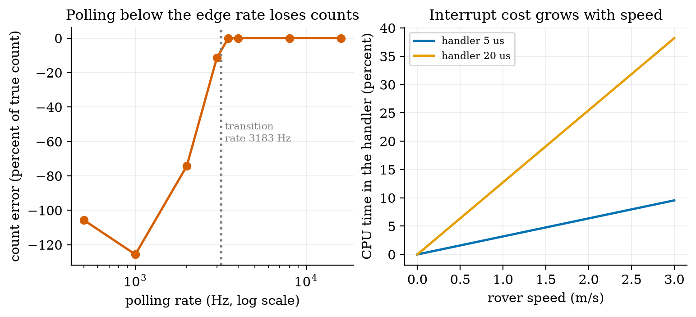
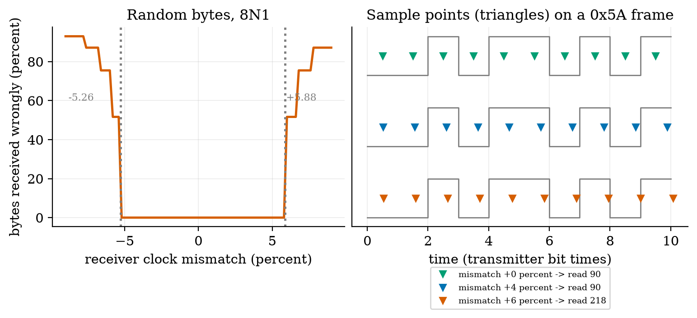
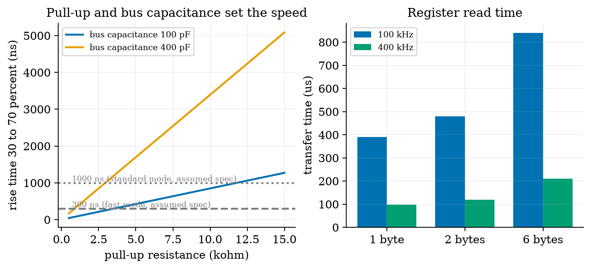
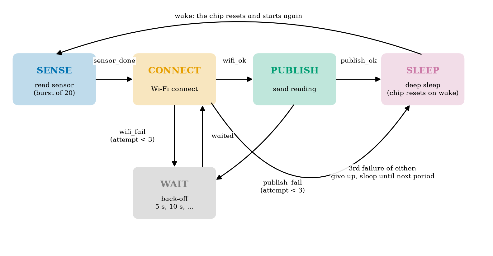
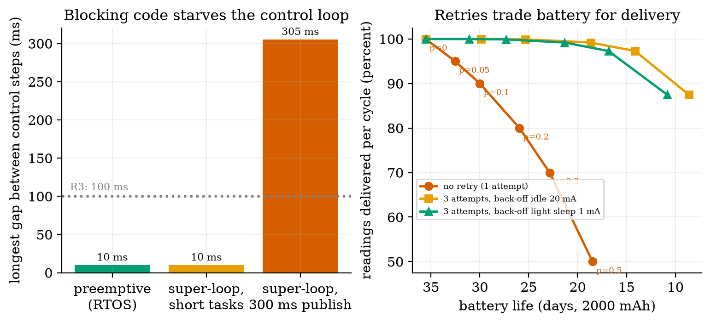

Unit 4 ready
Microcontrollers and Embedded Programming: Pins, Interrupts, State Machines
GPIO, interrupts, debouncing, UART and I2C timing, and the sensor node as a state machine.
Session map
After this session you can:
- choose between a microcontroller and a single-board computer for a job, and describe what a GPIO pin, a timer and an interrupt do;
- explain why a mechanical button needs debouncing, write the rule as a few lines of state-machine code, and state what it costs;
- show why polling an encoder below its transition rate loses counts (and can even count backwards), and size the cost of the interrupt alternative;
- derive the baud-rate tolerance of a UART and the pull-up limit of an I2C bus, and estimate the time to read a register;
- write the sensor node’s cycle as a finite-state machine with retries and back-off, and compute what the retry policy costs in battery and buys in delivery.
- Prerequisites: Unit 2 (pull-ups, RC rise time, the node’s state-by-state power budget), Unit 3 (aliasing, quadrature encoder, burst averaging). Basic Python.
- Difficulty ladder used: easy → medium → medium-hard → hard (Sections 3.1 to 3.4); the hardest tier is posed as open questions in Section 3.5.
- Deliverables: this document (.tex, .pdf, .docx), 6 figures, the module
codes/embedded/fsm_sim/(node_fsm.py, a debouncer and the node state machine that run unchanged on MicroPython;fsm_sim.py, host simulators; 9 tests), and thefirmware/folder (MicroPythonmain.py, Arduinobutton_fsm.ino, Wokwidiagram.json). - Source anchors: all formulas are derived in the text. Honesty label: logic tested on the host; hardware I/O not executed.
node_fsm.pyis unit-tested under CPython with a fake hardware object;main.py, the Arduino sketch and the Wokwi wiring were never run on a board or in Wokwi here. The contact-bounce timings (chatter of up to about 8 ms), the 5 \mus interrupt handler, the node’s currents and times, the 3 s connect timeout, and the I2C rise-time limits (1000 ns and 300 ns) are assumed typical values, not measurements; check the I2C specification and your datasheets.
1. Terms: the term tree
| Term | Symbol | One-line meaning | Where it appears | New / known |
|---|---|---|---|---|
| microcontroller (MCU) | a chip with a processor, memory and input/output pins, for one dedicated job | 2 | new | |
| single-board computer (SBC) | a small general computer that runs an operating system (for example Linux) | 2 | new | |
| GPIO | general-purpose input/output pin: reads or drives a logic level | 2 | new | |
| interrupt | a hardware signal that pauses the main code and runs a handler immediately | 3.3 | new | |
| timer | a hardware counter that ticks at a fixed rate, used for time, PWM and wake-up | 3.3 | new | |
| super-loop | one endless loop that calls every task in turn | 3.3 | new | |
| RTOS | a small operating system that switches between tasks by priority | 3.3 | new | |
| finite-state machine (FSM) | a system that is always in one state and changes state on events | 3.3 | new | |
| contact bounce | a mechanical switch chattering for a few ms when it closes or opens | 3.1 | new | |
| debouncing | accepting a new input level only after it has been stable for a set time | 3.3 | new | |
| polling | repeatedly reading an input in the main loop | 3.3 | new | |
| interrupt handler (ISR) | the short function that runs when an interrupt fires | 3.3 | new | |
| UART | a two-wire serial link with no clock; both sides must agree on the baud rate | 3.4 | new | |
| baud rate | bits per second on a serial line | 3.4 | new | |
| I2C | a two-wire shared bus (clock SCL, data SDA) with device addresses and pull-ups | 3.4 | new | |
| SPI | a four-wire fast bus with a clock and chip-select per device | 3.4 | new | |
| back-off | waiting longer before each retry | 3.4 | new | |
| deep sleep | a low-power mode in which almost everything is off and the chip resets on wake | 3.4 | new | |
| MicroPython | Python for microcontrollers | 3.4 | new |
Terms used but not taught here: MQTT (Unit 5), Wi-Fi details (Unit 5), watchdog timer (named only), DMA (named only), PID (Unit 9).
2. Remember
A microcontroller (MCU) is a computer on one chip: a processor, a few hundred kilobytes of memory, timers, serial buses, an ADC and pins (GPIO: general-purpose input/output) that you read and drive directly. It runs one program, or a small scheduler, starts in milliseconds and can sleep at microamperes. A single-board computer (SBC) such as a Raspberry Pi is a general computer with gigabytes of memory that runs an operating system (Linux); it can run Python, a database and a camera pipeline, boots in tens of seconds and draws watts. The ESP32 board used in this course is an MCU with Wi-Fi.
| MCU (ESP32 class) | SBC (Raspberry Pi class) | |
|---|---|---|
| clock | about 240 MHz | about 1 to 2 GHz, several cores |
| memory | hundreds of kB | gigabytes |
| software | one program, or an RTOS | full operating system |
| boot | milliseconds | tens of seconds |
| power | milliwatts awake; microwatts asleep | watts; no true deep sleep |
| best at | real-time pins, sensors, battery nodes | vision, planning, storage, networking |
Typical values are quoted from general knowledge and are marked as such; replace them with datasheet values for a real design. The rover uses both: an MCU close to the motors and encoders, an SBC as the “edge” computer of Unit 1.
A finite-state machine is always in exactly one state; an event (a button edge, a timeout, a message) moves it to the next state according to a table, and the transition may trigger an action. Writing embedded code as an FSM makes every case explicit: what happens on a failure in each state is a line in the table, not a surprise.
Memory hooks.
- Poll or interrupt: “do I keep asking, or do they tell me?” Polling is simple but loses fast events; an interrupt costs a little time per event but never misses one.
- A switch is a spring, not a wire. It bounces for a few milliseconds, so one press is many edges.
- Never block. A
delay()or a long network call stops everything else; use a state machine and timers. - Sleep is the default; awake is the exception. (Unit 2: the battery is spent while awake.)
Before you read on: three predictions (answers in Section 10).
- A button press makes the contact chatter for a few milliseconds. About how many falling edges would an unfiltered input count for one press: 1, about 6, or about 100?
- The rover’s encoder makes 3183 state changes per second at 0.5 m/s. If your loop polls it 1000 times per second, does the count come out low, or can it come out negative?
- A UART’s receiver clock is 6% faster than the sender’s. Does it still receive every byte correctly?
Recall quiz (answers in Section 10).
- What is the main difference between an MCU and an SBC?
- What does an interrupt do that polling cannot?
- Why is a debounce time always a compromise?
- What does the stop bit of a UART frame let the receiver check?
- In which state does a battery node spend most of its time, and why must it not block while there?
3. Understand: the derivation
3.1 Tier 1 (easy): intuition and a picture
A pushbutton is two bits of springy metal. When they meet, they do not stay together cleanly: they bounce apart and together several times over a few milliseconds before settling. To a microcontroller reading the pin a million times a second this is not one press but a burst of edges. Figure 1 (left) shows one simulated press: the raw pin falls, rises, falls, rises, falls, rises and falls again between 10 and 18 ms, and only then stays low. A counter that increments on each falling edge would count it four times. Over 150 simulated presses, an unfiltered input counts 5.81 falling edges per press on average (the chatter at the release adds some too). Prediction 1 of Section 2: about 6.
The fix is a rule, not a part: accept a new level only after it has stayed the same for a set time (a debounce time). In Figure 1 (left) the debounced output (blue) changes once, about 38 ms after the press started: the 18 ms the contact needed to settle plus the 20 ms rule. One press, one event.

The right panel shows the price: a debounce time long enough to hide the chatter is also long enough to swallow a quick tap. Debouncing is always a compromise between false events and lost events.
3.2 Tier 2 (medium): the definitions made precise
3.2.1 What an MCU gives you
- GPIO. A pin can be set as an input (reads 0 or 1; Unit 2: add a pull-up to avoid a floating input) or an output (drives 0 V or 3.3 V; a few mA to tens of mA at most, so a transistor from Unit 2 drives anything larger). Many pins have alternate functions: PWM, ADC, serial buses.
- Timers. A timer is a counter driven by the clock, divided by a prescaler. With an assumed 80 MHz timer clock and a prescaler of 80, it ticks at 1 MHz (1 \mus per tick); a 16-bit counter then wraps every 65{,}536\ \mu\text{s}=65.5 ms. A PWM signal at 1 kHz is a period of 1000 ticks, so its duty cycle (Unit 2) has 1000 steps, about 10 bits of resolution. A hobby-servo signal (Unit 3) is a 20 ms period of 20,000 ticks with a 1000 to 2000 tick pulse.
- Interrupts. The processor can be told to stop what it is doing, run a short function (the interrupt handler, ISR) and return. Interrupts come from pins (an edge), timers (a tick) and peripherals (a byte arrived). The handler must be short: it blocks everything of lower priority.
- Buses. UART, I2C and SPI (Section 3.4) connect sensors and other chips with few wires.
3.2.2 Two ways to structure the program
A super-loop is one endless loop that calls each task in turn: read the sensor, update the display, publish. It is the simplest design and is fine when every task is short. Its weakness is that every task waits for the slowest one. An RTOS (real-time operating system) lets each task run as its own thread with a priority, and the scheduler switches to the highest-priority task that is ready, interrupting a low-priority one (preemption). Section 3.3.3 puts numbers on the difference.
3.3 Tier 3 (medium-hard): the main derivations
3.3.1 Debouncing as a state machine
The debouncer of the module is a two-state-plus-timer machine with three variables: state (the accepted level), cand (the level currently being timed) and t_change (when the raw level last changed). For each raw sample at time t:
- if the raw level differs from
cand: setcandto it andt_change=t (a new candidate; restart the timer); - otherwise, if the raw level differs from
stateand t-t_{\text{change}}\ge W: accept it (statechanges; report one event).
That is the whole algorithm (Debouncer.update in node_fsm.py; the Arduino sketch uses the same lines). Its behaviour follows from the rule. Event latency is the settling time plus W: in Figure 1 (left) about 18+20=38 ms after the press began. False events vanish once W exceeds the longest quiet gap inside the chatter: the figure’s right panel shows 2.29 events per press at W=1 ms, 1.17 at 2 ms, and 1.00 from 5 ms (the chatter in our model lasts up to about 8 ms, but its quiet gaps are much shorter). Lost events appear when the press itself is shorter than W plus the settling: with press durations uniform from 15 to 200 ms, 1.3% of presses are lost at W=10 ms, 5.3% at 20 ms, 10.7% at 30 ms and 22.7% at 60 ms (a first-order estimate for large W is (W-15)/185: 24% at 60 ms against the measured 22.7%). A typical choice of 10 to 20 ms follows the chatter of ordinary switches; a game controller for fast taps uses less.
3.3.2 Polling versus interrupts
Take the rover’s encoder at 0.5 m/s: with 1320 counts per wheel revolution and 0.157 mm per count (Unit 3), the two A/B lines change state 3183 times per second, once every 314 \mus. A main loop that polls the pins reads them at a rate f_p. If f_p is above the transition rate every transition is seen (at most one transition falls between two reads). If f_p is below it, transitions are skipped, and the decoder of Unit 3 either meets an illegal two-bit jump (and ignores it) or, worse, sees a jump that looks like a legal move in the other direction. This is aliasing (Unit 3) in an unfamiliar place. Simulating a constant-speed encoder read at different polling rates and decoding the polled samples:
| polling rate (Hz) | counted | true | illegal jumps | error |
|---|---|---|---|---|
| 500 | -183 | 3177 | 316 | -105.8\% |
| 1000 | -816 | 3180 | 0 | -125.7\% |
| 2000 | 817 | 3181 | 1182 | -74.3\% |
| 3000 | 2816 | 3182 | 183 | -11.5\% |
| 3500 | 3182 | 3182 | 0 | 0.0% |
| 4000 | 3182 | 3182 | 0 | 0.0% |
| 8000 | 3182 | 3182 | 0 | 0.0% |
The remedy is the interrupt: the hardware calls a short handler on every edge, so no transition is missed however slow the main loop is. Its cost is CPU time: transitions per second times the handler’s duration. With an assumed 5 \mus handler the load is 3183\times5\ \mu\text{s}=1.59\% at 0.5 m/s and 9.5% at 3 m/s; with a sloppy 20 \mus handler 6.4% and 38.2% (Figure 2, right). Keep handlers tiny: increment a counter and return. Many chips can also count pulses in dedicated hardware with no CPU load at all.

3.3.3 Super-loop versus preemption: how long can control be starved?
The rover’s speed controller (Unit 9) wants to run every 10 ms and needs 0.2 ms each time. The node also reads a sensor every second (5 ms) and publishes over Wi-Fi once a minute. Suppose that publish blocks for 300 ms (an assumed typical blocking time of a synchronous network call). In a super-loop, nothing else runs while it does: simulating 120 s, the control task’s longest gap is 305.2 ms, against 10.0 ms when every task is short (Figure 6, left). Only 2 of 11,999 gaps exceed 20 ms (the two publishes), which is why the bug is easy to miss in testing. At 0.5 m/s the rover travels 0.5\times0.3052=15.3 cm blind during the longest gap, against 0.5 cm for a 10 ms gap. Requirement R3 of Unit 1 asks for a blind distance under 5 cm (a loop under 100 ms): the super-loop with a blocking publish violates R3 by a factor of three, rarely and silently. There are three remedies: make the network call non-blocking (an FSM that returns control between steps, as in Section 3.4.3), run it as a lower-priority task under an RTOS (the controller preempts it), or give the networking to a second core or a second chip.
3.4 Tier 4 (hard): buses, the node’s state machine, and what retries cost
3.4.1 UART: two wires and an agreement on time
A UART sends bytes over one wire with no clock. Both ends must agree on the baud rate (bits per second). The line idles high. A frame (the common 8N1 format: 8 data bits, no parity, 1 stop bit) is a start bit (0), eight data bits least significant first, and a stop bit (1): 10 bits for one byte, so 115,200 baud carries 115{,}200/10=11{,}520 bytes per second, each byte lasting 86.8 \mus. The receiver sees the falling edge of the start bit, waits half a bit time and then samples at the middle of each bit time of its own clock.
How wrong may the receiver’s clock be? Let the receiver’s bit time be (1+\delta) times the sender’s, in units of the sender’s bit time. The receiver samples data bit i (i=0\dots7) at time (1.5+i)(1+\delta) and the stop bit at 9.5(1+\delta), while the sender’s bit k occupies [k,k+1) and the stop bit is bit 9. Each sample must land inside its own bit. For the stop bit, 9\le9.5(1+\delta)<10 gives -\frac{0.5}{9.5}\le\delta<\frac{0.5}{9.5}\quad\Longleftrightarrow\quad|\delta|\lesssim5.26\%. \tag{1} The same arithmetic for the last data bit (index 8 in the frame, sampled at 8.5(1+\delta)<9) gives \delta<1/17=5.88\% on the fast side, because a receiver that runs fast samples the stop bit late, in the idle high level, where it still reads 1 and hides the error; the data bit is then the first to go. The simulation finds exactly these edges: with random bytes, the first wrong byte appears at +5.885\% and -5.265\% (the formula: +5.882\% and -5.263\%), and the byte error rate is 0 at \pm4\% and 47.9% at +6\% and 73.9% at -6\%. For the byte 0x5A (whose last data bit is 0), a receiver 6% fast reads 218 (0xDA): the last bit flipped from 0 to 1. Prediction 3 of Section 2: no, 6% is already too much for some bytes. In practice the margin is smaller than \pm5\% because the start edge is found with some jitter and the line has noise: designs aim for under about 2 to 3 percent total mismatch. A bare RC oscillator inside a chip (a few percent off, and temperature dependent) is not good enough for a UART; a crystal (about 0.005 percent) is.

3.4.2 I2C and SPI
I2C connects many chips with two wires: SCL (clock) and SDA (data), shared by all devices, each with a 7-bit address. Both lines are open-drain: a device can only pull a line low, and pull-up resistors (Unit 2) bring it high. A byte is 8 bits followed by an acknowledge bit (9 clocks). Reading a 16-bit register takes: START, address with write bit (9 clocks), register number (9), a repeated START, address with read bit (9), two data bytes (18), STOP: counting the three START/STOP conditions as one clock each gives 3+27+9n=48 clocks for n=2 bytes (one byte: 39; six bytes: 84). At 100 kHz that is 480 \mus, at 400 kHz 120 \mus (Figure 4, right); reading it ten times a second occupies the bus for 0.48% of the time.
The pull-up limits the speed. A line is pulled low actively but rises only through the pull-up charging the bus capacitance C. This is the RC circuit of Unit 2: the voltage rises as V(1-e^{-t/\tau}) with \tau=RC. The I2C specification measures the rise from 30% to 70% of the supply, which takes \tau\ln(0.7/0.3)=0.8473\,RC. For R=4.7\ \text{k}\Omega and an assumed C=100 pF the rise time is 398 ns; for C=400 pF it is 1593 ns. With assumed limits of 1000 ns (standard mode, 100 kHz) and 300 ns (fast mode, 400 kHz), the largest pull-up is R_{\max}=t_r/(0.8473\,C): 11.8 k\Omega and 3.54 k\Omega at 100 pF; 2.95 k\Omega and 885 \Omega at 400 pF. A long wire or many devices (large C) forces a smaller pull-up, and a smaller pull-up draws more current when the line is low: 3.3/4.7\ \text{k}\Omega=0.70 mA. Speed, capacitance and power form a triangle. (Treat the 1000 ns and 300 ns limits as typical values from memory of the specification: check the document before building a board.)
SPI uses four wires (clock, two data lines, a chip-select per device) with no addresses and no pull-ups; it is faster (tens of MHz) and simpler, but needs one more pin per device. UART: two devices, no clock; I2C: many devices, two wires, moderate speed; SPI: few fast devices, more wires.

3.4.3 The sensor node as a state machine
The node’s cycle from Unit 2 becomes an FSM (Figure 5, the class NodeFSM): SENSE (burst of 20 readings, Unit 3) \to CONNECT (Wi-Fi) \to PUBLISH (send the reading) \to SLEEP (deep sleep for the rest of the 60 s period). When CONNECT or PUBLISH fails, the machine goes to WAIT for a back-off time, doubling each time (5 s, 10 s), then tries again; after the third failure it gives up and sleeps until the next period. The machine is written as a function handle(event) returning the next action (“read the sensor”, “connect”, “publish”, “wait n seconds”, “deep sleep n seconds”); the hardware calls are injected, so the same machine is run by the board’s main.py and by pytest with a fake board. An event that is not allowed in a state raises an error (a test checks that publish_ok in the initial state does), so impossible transitions cannot pass silently.

Deep sleep and reset. In deep sleep the processor and most memory are off (a few microamperes for the chip alone: our assumed 0.01 mA); on wake the chip resets and runs main.py from the start. So there is no state to resume: the FSM’s SLEEP state is the end of the program, and anything to be remembered (such as a failure counter) must be kept in the small memory that survives deep sleep. A sleep timer built on the chip’s internal RC oscillator is only a few percent accurate (assumed typical), so a “60 s” sleep may last 57 to 63 s: fine for reporting, not for a precise schedule.
What do retries cost? Use the assumed currents of Unit 2 (wake and read: 50 mA, 0.2 s; successful connect: 100 mA, 0.5 s; publish: 140 mA, 0.3 s; shutdown: 50 mA, 0.2 s; sleep 0.01 mA), and assume a failed connect attempt costs a 3 s timeout at 100 mA = 300 mA s, which is 3.3 times the 92 mA s of a successful connect and publish. If each attempt fails with probability p and the node makes at most M attempts, attempt k is reached with probability p^{k-1}, so the expected charge per cycle is the fixed part (wake and shutdown: 20 mA s) plus \sum_{k=1}^{M}p^{k-1}\big[(1-p)\,S+p\,C_f\big] plus the back-off waits \sum_{k<M}p^{k}\,i_w\,b_k, where S=92 mA s, C_f=300 mA s, i_w is the current while waiting, b_k=5\cdot2^{k-1} s, and delivery succeeds with probability 1-p^M. The module’s expected_node is this formula; simulate_node runs the actual NodeFSM against random failures. For p=0.2, M=3 and idle back-off at 20 mA, 20,000 simulated cycles give 3.549 mA and 99.26% delivery against the formula’s 3.571 mA and 99.20% (0.6% apart), and 3.31 s awake per cycle against 3.34 s.
| policy | p=0.05 | p=0.1 | p=0.2 | p=0.3 | p=0.5 |
|---|---|---|---|---|---|
| no retry: life (days) | 32.5 | 30.0 | 25.9 | 22.9 | 18.5 |
| no retry: delivered (%) | 95.0 | 90.0 | 80.0 | 70.0 | 50.0 |
| 3 attempts, idle back-off: life | 29.9 | 25.4 | 18.7 | 14.1 | 8.6 |
| 3 attempts, light-sleep back-off: life | 31.1 | 27.3 | 21.3 | 16.8 | 10.9 |
| 3 attempts: delivered (%) | 99.99 | 99.9 | 99.2 | 97.3 | 87.5 |

Requirement R4 (30 days) is now at risk from failures, not only from awake time. With the 3 s timeout, even without retries life is 30.0 days at p=0.1 and falls below 30 days beyond it, and with three attempts a failure rate of 5% already gives 29.9 days (idle wait) or 31.1 days (light-sleep wait). The cost is dominated by the length of the failed attempt: shorten the timeout from 3 s to 1 s (assumed to be adequate for a connect that normally takes 0.5 s) and the life at p=0.2 with three attempts and light-sleep wait rises from 21.3 to 29.0 days, and without retries from 25.9 to 35.0 days. A timeout is an energy parameter. A policy that is right depends on how often failures happen: measure p on the real network before choosing M.
3.4.4 MicroPython and Arduino C++
The two common ways to program an ESP32 are MicroPython (Python on the chip: short programs, a live console, slower and with less memory control) and Arduino C++ (compiled: faster, smaller, more libraries for exotic parts). The course uses MicroPython for the node because the logic is the point; the Arduino sketch of the same debounce is in firmware/arduino/button_fsm.ino. The structure that makes the course’s code testable: all logic in a pure file (node_fsm.py: no imports, only ints, tuples and lists, so it runs under MicroPython and CPython alike), hardware behind one small object (read_sensor, wifi_connect, publish, sleep_s, deep_sleep), and a thin main.py that wires the two. The tests run run_cycle with a fake hardware object that scripts a Wi-Fi failure followed by a success and check that the actions are exactly read_sensor, wifi_connect, wait, wifi_connect, publish, deep_sleep with a 5 s back-off.
3.5 Tier 5 (hardest): open questions
- How would you prove the debouncer correct? Its guarantee is “an event is reported only for a level stable for W ms”. State the guarantee for a signal that chatters during the stable period, and say what a hardware (RC plus Schmitt trigger) debouncer guarantees instead.
- Interrupt latency and priority. Two interrupts (encoder edge, timer tick) can fire together. What happens to a handler that runs longer than the interval between edges? Derive the longest permitted handler time at 3 m/s (Figure 2: 9.5% at 5 \mus).
- A watchdog. If the node hangs in WAIT forever (a missed event), the battery drains. A watchdog timer resets the chip unless the program feeds it regularly. Where in the FSM would you feed it, and what is the longest legitimate time between feeds?
4. Apply
4.1 Worked problems
Problem 1 (timer arithmetic). A timer clock of 80 MHz is divided by a prescaler of 40. How long is one tick, how long until a 16-bit counter wraps, and how many steps does a 500 Hz PWM have?
Solution. Tick rate 80\ \text{MHz}/40=2 MHz, so a tick is 0.5 \mus; the counter wraps after 65{,}536\times0.5\ \mu\text{s}=32.8 ms; a 500 Hz PWM has a period of 2 ms =4000 ticks, so 4000 duty steps (about 12 bits).
Problem 2 (debounce choice). The chatter lasts at most 8 ms, and users tap for at least 60 ms. Choose W and give the event latency.
Solution. W must exceed the chatter’s quiet gaps (so at least 8 ms) and stay below the shortest tap (60 ms); take W=20 ms. The latency is the settling time plus W, at most 8+20=28 ms.
Problem 3 (polling rate). The encoder of a rover moving at 1.2 m/s makes how many transitions per second (0.157 mm per count), and what is the slowest safe polling rate?
Solution. 1.2/0.000157=7643 transitions per second; poll above that, with a margin: 10 to 16 kHz. An interrupt handler of 5 \mus would use 7643\times5\ \mu\text{s}=3.8\% of the CPU.
Problem 4 (UART). A link runs at 115,200 baud. How long does a 20-byte message take, and what clock error (both ends together) can it tolerate?
Solution. 20 bytes \times 10 bits =200 bits /115{,}200=1.74 ms. Total mismatch below about 5%: with a safety margin, design for 2%.
Problem 5 (I2C). A bus has 200 pF of capacitance. What is the largest pull-up for 1000 ns, and the rise time of a 4.7 k\Omega pull-up?
Solution. R_{\max}=1000\times10^{-9}/(0.8473\times200\times10^{-12})=5.9 k\Omega; for 4.7 k\Omega: 0.8473\times4700\times200\times10^{-12}=797 ns, inside 1000 ns but not inside 300 ns.
4.2 Code and figures
from node_fsm import NodeFSM, Debouncer, run_cycle
import fsm_sim as F
d = Debouncer(20, 1) # accept a level after 20 ms stable
print([d.update(v, t) for v, t in [(1, 0), (0, 1), (1, 3), (0, 5), (0, 30)]][-1]) # (0, True)
class Fake: # a pretend board
def read_sensor(self): return "sensor_done"
def wifi_connect(self): return "wifi_ok"
def publish(self): return "publish_ok"
def sleep_s(self, s): pass
def deep_sleep(self, s): print("sleep", s)
print(run_cycle(Fake(), NodeFSM(60, 3, 5))) # read_sensor, wifi_connect, publish, deep_sleep
print(F.expected_node(0.2, 3, 5, 1.0)) # avg current, delivery, awake secondsThe module and its README are in codes/embedded/fsm_sim/ and the firmware in its firmware/ folder. The nine tests check the debouncer (it accepts only stable levels and reports a press once), the removal of false presses on simulated bounce (many raw edges, exactly one press each after debouncing), the FSM paths (success, retry with back-off 5 s then 10 s, give-up, and the error on an illegal event), run_cycle against a fake board, the polling threshold, the UART round trip and tolerance, the I2C numbers, the super-loop gap, and the agreement of expected_node with 20,000-cycle simulations to 3%.
What would look different if the theory were wrong? If equation (1) were wrong, the first failing mismatch would not sit at +5.885\% and -5.265\%; it does (to the grid of 0.005 percentage points). If the expected-charge formula were wrong, the simulation of the real state machine would not match it; it does within 0.6%.
Two bugs caught on the way. Figure 1 first showed a debounced trace that never changed: the figure script had the time and level arguments of a zip swapped, and the debouncer in the module was right. Figure 3 first used the byte 0xA5 for the demonstration, and it was received correctly even at +6%: its last data bit is 1, the same as the stop bit, so the late sample could not see the error. Only bytes whose last bit is 0 fail on the fast side; 0x5A shows it.
5. Analyze
Limits. As the debounce time grows the false events vanish and the lost presses grow without bound; as the polling rate rises the count converges to the truth but the CPU load rises with it. At zero mismatch a UART never errs; its tolerance is a hard geometric limit set by 9.5 bit times to the stop bit. As the failure probability p\to1, delivery \to0 and the battery \to the cost of M failed attempts per cycle.
Dominance. In the retry table, at p\ge0.2 the cost of failed attempts and waiting dominates the node’s budget; at p\le0.05 it is under 15 percent. For polling, the dominant term is the ratio of poll rate to transition rate: nothing else matters below 1, nothing is gained above a few times it.
Order-of-magnitude estimate. A 300 ms blocking call at 0.5 m/s is 15 cm blind: speed times blocking time, before running anything.
Sensitivity. The retry cost depends mostly on the timeout of a failed attempt: reducing it from 3 s to 1 s moves life at p=0.2 (no retry) from 25.9 to 35.0 days, a 35% gain from one parameter.
Failure modes. (1) A blocking call in the main loop: control starved (R3). (2) Polling an encoder too slowly: counts lost or reversed. (3) Long interrupt handlers: other events delayed. (4) Floating inputs: random events (Unit 2). (5) An FSM with no timeout in a waiting state: the node hangs and drains its battery (add a watchdog). (6) Clock mismatch on a UART: garbled bytes, worst for some patterns only. (7) Too-large I2C pull-ups on long wires: edges too slow, intermittent errors. (8) Resets lose state: after deep sleep nothing is remembered unless stored.
Items used from the pedagogy checklist: limits, dominance, estimate, sensitivity, failure modes, convergence (the Monte Carlo agrees with the formula), invariants (illegal events raise errors; the first-failure mismatches match theory), constructed-versus-measured (all hardware timings are assumed; the logic is exact).
6. Evaluate
MCU versus SBC. The MCU wins on power, determinism and cost for sensing, actuation and battery operation; the SBC wins on computation and software ecosystem. A rover usually needs both, joined by a serial link (UART or SPI): an MCU runs the 10 ms control loop and encoder interrupts; the SBC plans paths and talks to the cloud. This split also answers Section 3.3.3: put the blocking, slow code on the SBC.
Super-loop versus RTOS versus event-driven FSM. A super-loop is easiest to write and debug and is adequate if every task is short. An RTOS adds preemption (Section 3.3.3), memory use and scheduling bugs (priority inversion, shared data), but it isolates a slow task from a fast one. A non-blocking FSM driven by timers and interrupts gets most of the benefit without an RTOS and is how the node is written.
Hardware versus software debouncing. An RC filter with a Schmitt trigger (a gate with two thresholds, the analog twin of hysteresis in Unit 1) costs two parts and no CPU time, but a fixed delay; software debouncing costs a timer and some code but is adjustable. Many boards do both.
Polling versus interrupt versus hardware counter. Polling is fine for slow human inputs; interrupts for pulses up to the kilohertz range; a hardware pulse counter for anything faster, at no CPU cost.
Retry policy. More attempts raise delivery but cost battery (Table above); the right M, timeout and wait mode depend on how often the network fails. The robust approach is to measure p, then choose.
Context. The finite-state machine, the oldest idea in this Unit, comes from digital logic and compilers; its value in embedded work is that it makes the failure cases visible. When NOT to use an FSM: for a computation (a filter, a controller), where the code is a formula, not a set of modes.
Honesty about this Unit’s numbers. The algorithms, formulas and counts (debouncing, polling, UART tolerance, the I2C clock count, the retry expectation) are exact for the models and were tested against simulations. The physical numbers (chatter duration, handler time, node currents, 3 s timeout, connect times, I2C limits, sleep-timer accuracy) are assumptions. The firmware that talks to hardware was not executed.
7. Create
- Make the debouncer adaptive. Measure the chatter of a real button on a board (or of the simulator with a longer settle time) and choose W from the data; plot lost presses against W.
- Add a watchdog to the FSM. Extend
NodeFSMwith a limit on the time in WAIT and test it with a fake board that never sendswaited. - Find the best timeout. Using
expected_node, search the connect timeout and the number of attempts that maximise battery life subject to 99% delivery at p=0.2. - Combine with Unit 3. Feed the encoder A/B signals through the interrupt model and compute the speed estimate with a 100 ms window; report the CPU load at 3 m/s.
- Could become a package module:
iotrobotics.embeddedwithDebouncer,NodeFSM,run_cycleand the timing calculators, reused by the rover firmware in Units 9 and 11.
Running project, Layer 3: node firmware as a state machine. The soil node is now a tested state machine (NodeFSM) with a burst-averaging sense step, a connect step with a bounded retry, deep sleep between reports, and a thin MicroPython main.py (not run on hardware). Updated requirements:
| id | requirement | status after Unit 4 |
|---|---|---|
| R4 | soil node lasts at least 30 days | 35.5 days with no failures (Unit 2, assumed 0.5 s connect); at risk: with failures the life depends on the timeout; with a 1 s timeout and p=0.2, three attempts: 29.0 days; no retry: 35.0 days |
| R3 | rover stops before an obstacle: loop under 100 ms | violated by a blocking 300 ms publish in a super-loop (305 ms gap, 15.3 cm blind); met if networking is non-blocking or on another core or chip |
| R14 (new) | the node delivers at least 99% of its readings | 99.2% with three attempts at p=0.2; costs battery (Table above) |
| R15 (new) | wheel-encoder counts never lost up to 1.2 m/s | interrupts or a hardware counter (7643 transitions per second; polling above 8 kHz is also enough); handler under 5 \mus gives 3.8% CPU |
8. Visualization lesson
| Chart type | Best for | How it misleads | matplotlib call |
|---|---|---|---|
| digital signal trace (step plot with offsets) | logic levels and their timing | stacking rows with offsets loses absolute levels; label each row | ax.step(t, level + offset, where="post") |
| dual-axis trade-off plot | two opposing quantities against one parameter (events counted, presses lost against W) | the crossing point depends on the axis ranges; state both axes’ meaning | ax.plot(...), ax.twinx() |
| error against rate on a semilog axis | a threshold phenomenon over decades (polling rate) | a smooth line between points suggests a gradual change; mark the threshold | ax.semilogx(x, y, "o-"), ax.axvline(x0, ls=":") |
| sample points on a waveform | showing where a receiver samples relative to the bits | triangles can hide the waveform they sit on; keep rows separate | ax.step(...), ax.plot(ts, y, "v") |
| state diagram | modes and transitions | a diagram shows the paths, not their probabilities or costs; add them in a table | FancyBboxPatch, FancyArrowPatch |
| trade-off (Pareto-style) scatter | choosing between policies by two outcomes (battery against delivery) | reversing an axis so “better” is up-right confuses a first reader; say so in the caption | ax.plot(life, delivery, "o-"), ax.invert_xaxis() |
| bar of a worst case | the longest gap, not the average | a bar of the worst case hides how rare it is (2 gaps of 11,999); print the rarity | ax.bar(x, v), ax.axhline(limit) |
Reading Figure 6 (left) as a chart. A bar of the longest gap is the right summary here, because a control loop fails on its worst gap, not on its mean; the two 305 ms gaps are invisible in an average, which is what makes the bug hard to find.
9. Problem set
- (easy) A 16-bit timer ticks at 1 MHz. How long until it wraps, and what prescaler from 80 MHz gives that tick?
- (medium) A button chatters for at most 5 ms and users tap for at least 40 ms. Choose a debounce time and give the event latency and the largest tap-length you would still catch.
- (medium-hard) An encoder has 2000 counts per revolution and the wheel turns at 8 revolutions per second. Find the transition rate, the slowest safe polling rate (with a 2x margin) and the CPU load of a 6 \mus interrupt handler.
- (hard) Derive the baud-rate tolerance for a UART with a 9-bit data frame (start, 9 data bits, one stop bit). How does it compare with 8N1?
- (hardest) Using the closed-form
expected_nodeand the assumed currents, find the connect timeout t_f for which three attempts with light-sleep back-off (1 mA) at p=0.2 gives exactly 30 days, and the delivery at that point.
10. Retrieval practice and recap
Answers to the Section 2 predictions.
- About 6 (5.81 falling edges per press on average, in the simulation).
- It can come out negative: at 1000 Hz the decoded count was -816 against a true +3180.
- No: at +6% about half of random bytes are received wrongly (47.9%); the tolerance is about \pm5\% and in practice less.
Answers to the Section 2 recall quiz.
- An MCU runs one dedicated program directly on pins, starts in milliseconds and can sleep at microamperes; an SBC runs a full operating system and draws watts.
- It reacts to an event immediately, however busy the main loop is, so no fast event is missed.
- A longer debounce removes more chatter but loses quick taps and delays every event.
- That the line returned to idle (a framing check): a stop bit read as 0 tells the receiver it is out of step.
- In deep sleep (about 98% of the time); while awake it must not block, or the loop (and anything depending on it) stalls.
Explain it to a friend.
- Why does one press of a button look like several presses to a microcontroller?
- Why can a loop that reads an encoder too slowly count backwards?
- Why can a longer timeout on a failed Wi-Fi connection shorten a battery’s life?
Re-derive by hand tomorrow, without looking: (a) the UART tolerance of 5.26% from the stop-bit sample time; (b) the expected charge per cycle for M attempts with failure probability p; (c) the I2C rise time 0.8473\,RC and the maximum pull-up for a given rise time and capacitance.
11. Where next
- Unit 5 gives the node a language: how the 60 s reading actually travels, with MQTT topics, quality-of-service levels, retained messages and last will, and a small broker and client of our own, checked against a real MQTT library.
- Terms named here but not taught: MQTT and Wi-Fi (Unit 5), watchdog timer and DMA (named), PID (Unit 9). They are registered in CURRICULUM.md.
- Open threads: the firmware that touches hardware (
main.py, Arduino, Wokwi wiring) was not run; all timings and currents are assumed; the 0.5 s connect time of Unit 2 is still an assumption that must be measured on a board; the Wokwidiagram.jsonpin names are untested.